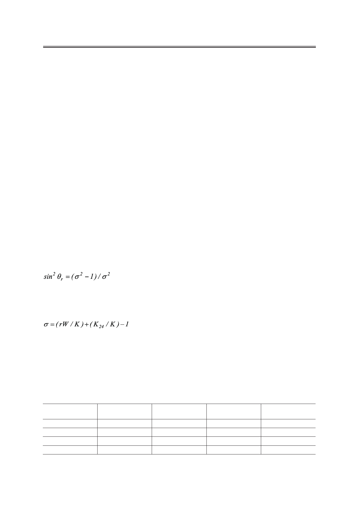

С.В. Пасечник, Д.В. Шмелева, А.В. Торчинская, О.А. Семина, А.А. Дюкин
ратурными зависимостями трех коэффициентов Мезовича, полученными ранее для объ-
емных образцов ЖК 440 и 5СВ. Интересно, что температурная зависимость эффектив-
ной сдвиговой вязкости ηeff близка к зависимости η3(T) в обоих случаях. Такая ситуация
может иметь место для планарной поверхностной ориентации директора в плоскости,
перпендикулярной к осям пор [7]. Тем не менее, теоретически возможно образование
различных ориентационных конфигураций в рассматриваемой системе [12, 13], которые
показаны на рис. 7. Прямые ЯМР исследования ориентационной структуры НЖК вну-
три пор пористых поликарбонатных пленок показали существование − в зависимости
от диаметра пор − выходящей из плоскости пленки радиальной (ER) конфигурации с то-
чечными дефектами (ERPD) и планарной полярной конфигурации (РР) [14]. Кроме того,
предварительная обработка пористой пленки 1%-ным раствором ориентанта (хромолан)
в изопропаноле, обеспечивает нормальное поверхностное сцепление, что может вызвать
переходы между различными конфигурациями, упомянутыми выше. Приведенные дан-
ные целесообразно использовать для объяснений результатов наших экспериментов. В
частности, компьютерное моделирование конфигурации ER, образованной внутри поры
[15] и отмеченной как (г) на рис. 7, показало, что эффекты слабого сцепления должны
быть приняты во внимание при типичных значениях силы сцепления и малых диаметрах
пор. В частности, они несут ответственность за отклонение поверхностного полярного
угла θr от значения θr=π/2, соответствующего идеальному сильному сцеплению. Анали-
тическое выражение для θr, полученное при одинаковых значениях модулей упругости
Франка (K11=K33=K), имеет вид:
,
(13)
где параметр сцепления σ определяется следующим образом:
(14)
В этом выражении r − радиус пор, W − полярная сила сцепления, K24 − специфический
модуль упругости для седлообразной деформации продольного изгиба (saddle-splay).
Результаты сравнения значений KcN, полученных с помощью
теоретического выражения (10) и вычисленных
из экспериментальных данных по τ для ЖК-440
Диаметр пор,
d, мкм
0.3
0.4
0.5
0.6
Время затухания
τ, с
330.8
239.8
187.9
124.8
Число идентичных
каналов, N
1.792∙108
0.84∙108
0.448∙108
0.224∙108
KN
c теор.
0.00155∙10-12
0.00230∙10-12
0.00299∙10-12
0.00310∙10-12
KN
c эксп.
0.00169∙10-12
0.00233∙10-12
0.00297∙10-12
0.00448∙10-12
Российский технологический журнал 2017 Том 5 № 5
33